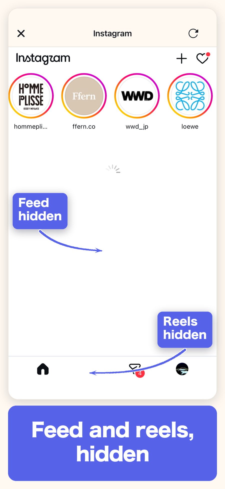
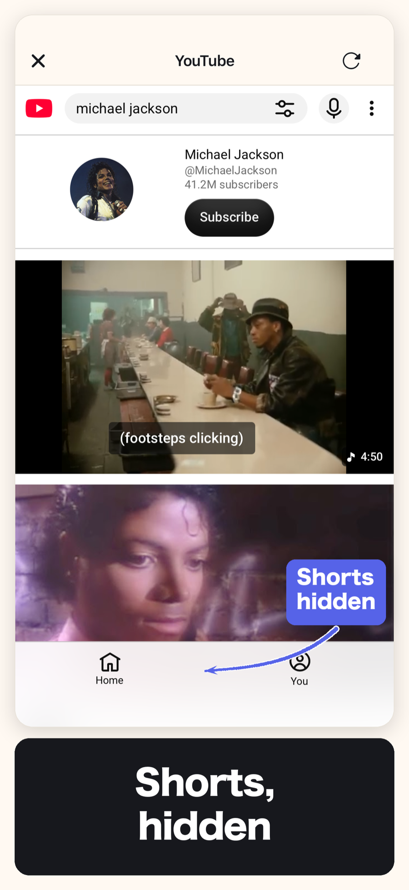
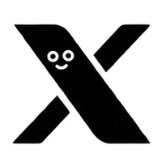
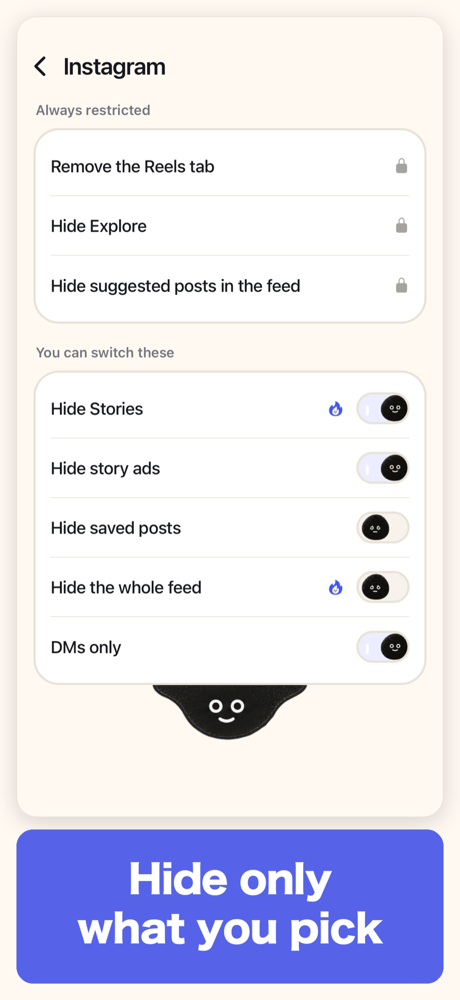
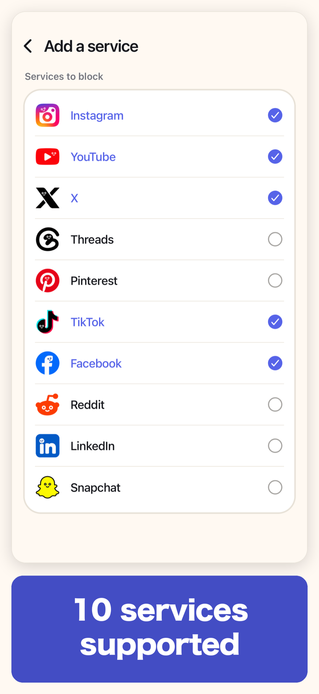
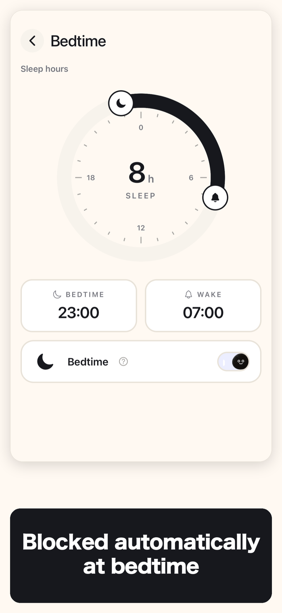
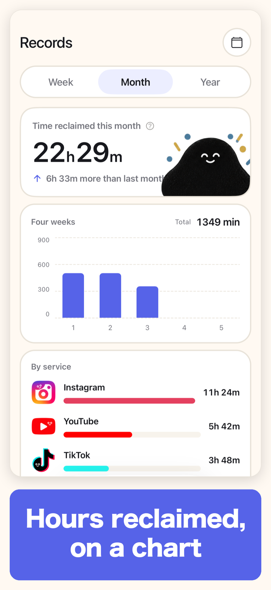

The core features that stop the endless scroll cost nothing.
minulo never obtains or stores your social media ID or password.
minulo only changes pages opened inside minulo. It will not restrict websites you open in Safari or any other browser.

Choose what gets hidden for each service, Instagram included.

Build the habit of reaching for minulo instead of the official social apps.

Pick days and hours, and the services you chose are blocked automatically.

See how often you turned back, and how much time you got back.
Not just on your phone — keep the same distance from social media on your Mac.